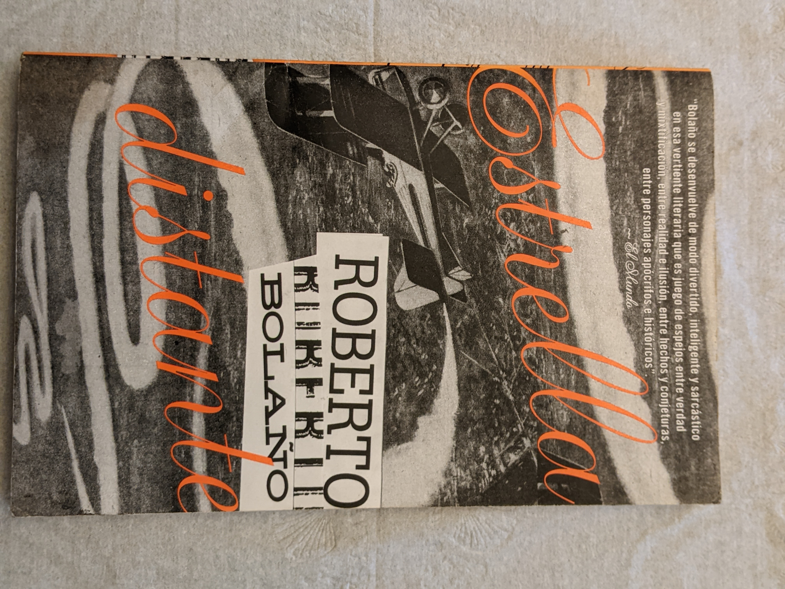

| The book shows various traces of stories that are intertwined in a confusing way, using an experimental language, more of a poetic narrative than in the rest of his novels. Its title refers to the Belgian city of Antwerp, although this does not play any role in the work. |
|
| 2666 is the last novel by Roberto Bolaño. It was released in 2004, a year after Bolaño's death. Its themes are manifold, and it revolves around an elusive German author and the unsolved and ongoing murders of women in Santa Teresa, a violent city inspired by Ciudad Juárez and its epidemic of female homicides. In addition to Santa Teresa, settings and themes include the Eastern Front in World War II, the academic world, mental illness, journalism, and the breakdown of relationships and careers. 2666 explores 20th-century degeneration through a wide array of characters, locations, time periods, and stories within stories. |
|
written in 1989. It was discovered among his papers following his death and published in Spanish in 2010. An English translation by Natasha Wimmer was published in November 2011. |
|
|  | The story is based on "The Infamous Ramírez Hoffman", the last chapter of Bolaño's book of imaginary history of Nazi Literature in the Americas in which the protagonist's name is Carlos Ramírez Hoffman. |
The novel tells the story of a strange murder, told in counterpoint by three narrators, a Chilean, a Mexican and a Spaniard, who insert their statements independently in each chapter. In the polyphonic technique used, a precedent from the second part of The Savage Detectives can be glimpsed. |
|
The novel is actually a fictional anthology written as an encyclopedia of literature, whose chapters contain the biography of different American writers and poets who sympathized with or practiced Nazism. Each biography is preceded by the name of the character, as well as the dates and places of his birth and death. |
|
Set amid the diaspora of Chilean exiles in Latin America and Europe, the fourteen stories in Last Evenings on Earth are peopled by Bolaño's beloved "failed generation" and demonstrate the complexities of Latin American identity and history. The narrators are usually writers grappling with private (and often unlucky) quests, speaking in the first person as if giving a deposition—like witnesses to a crime. |
|
The novel is narrated in first person by several narrators and divided into three parts. The first section, "Mexicans Lost in Mexico", set in late 1975, is told by 17-year-old aspiring poet, Juan García Madero. The book's second section, "The Savage Detectives," comprises nearly two-thirds of the novel's total length. The section is a polyphonic narrative which features more than forty narrators and spans twenty years, from 1976 to 1996. The third section of the book, "The Deserts of Sonora", is again narrated by Juan García Madero, and chronologically takes place straight after the first section, now in the Sonora Desert in January 1976, with Lima, Belano and a prostitute named Lupe. |
|
The novel is set in Paris and narrated by the Mesmerist Pierre Pain. In April 1938 Pain is approached by Madame Reynaud, whose late husband he had failed to help, to assist the Peruvian poet César Vallejo who is in the hospital, afflicted with an undiagnosed illness and unable to stop hiccuping. Pain's attempts to reach and treat Vallejo are thwarted by skeptical doctors and two mysterious Spanish men who bribe him not to treat Vallejo. |
|
Un nacionalista español aparece junto a sus compañeros de hinchada por televisión, animando a su selección, donde es visto por una mujer que lo va a buscar al estadio y lo seduce para llevarlo a su casa, follar y posteriormente secuestrarlo. Cuento dedicado a Teresa Ariño. |